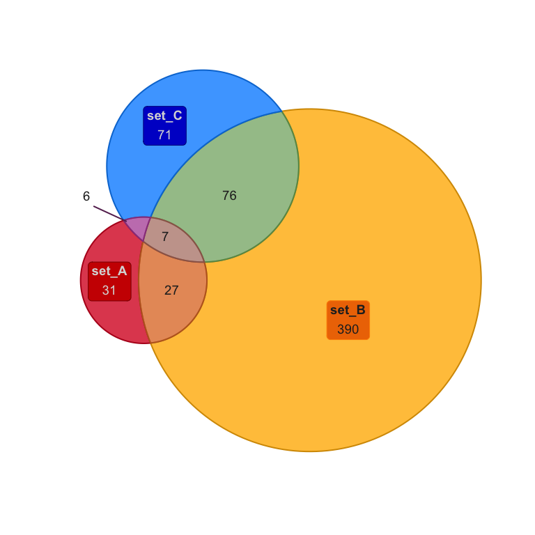
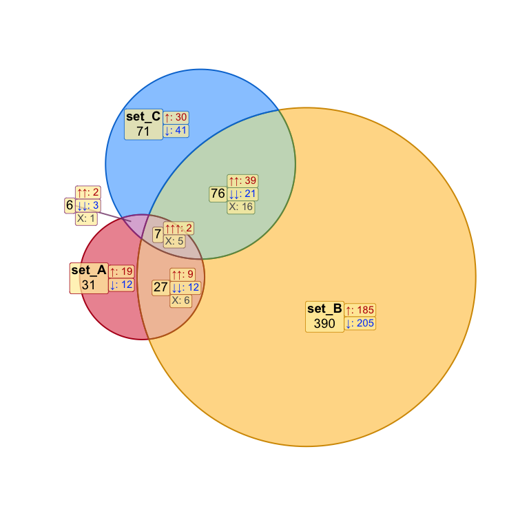
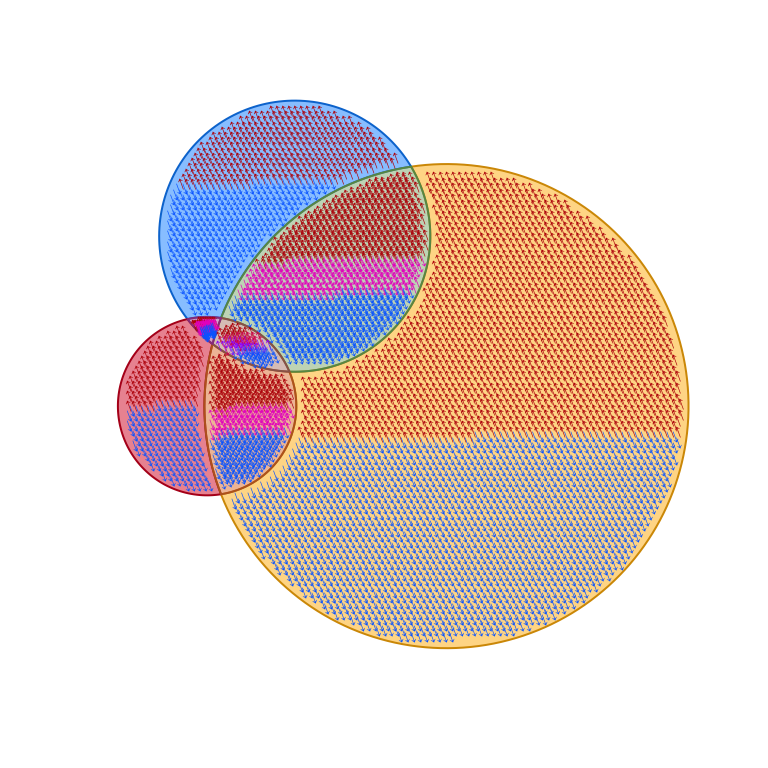

The goal of venndir is to enable directional Venn overlap analysis and visualization.
Installation
The development version of venndir can be installed with:
# install.packages("remotes") remotes::install_github("jmw86069/venndir");
Brief Overview of venndir
The venndir package includes a utility function make_venn_test() to create test data.
library(venndir) setlist <- make_venn_test(100, 3) venndir(setlist)

The more interesting case uses directionality.
Note that make_venn_tests() can simulate concordance, and the default is concordance=0.5. Concordance is defined by (agree - disagree) / (n), where concordance=0 means there are the same number that agree as disagree in direction, and concordance=1 means every element agrees in direction.
setlist <- make_venn_test(1000, 3, do_signed=TRUE) venndir(setlist)

There are a few ways to represent concordance… sometimes you want to see up-up, and down-down, and everything else is “mixed”. For that, use the default overlap_type="concordance" (shown above.)
Another option is to show “agreement” and “mixed”, and for this case use overlap_type="agreement" (below).
venndir(setlist, overlap_type="agreement")

The last option is to show the counts for each direction, by overlap_type="each" (below).
venndir(setlist, overlap_type="each")

Proportional directional Venn
You can even make a proportional Venn diagram, which uses the really nice eulerr R package.
venndir(setlist, proportional=TRUE)

At this point, labeling is an issue, and the best current remedy is manual placement of labels. So I’m trying to make it easy to move labels.
The output of venndir() contains a list with the polygon coordinates, and the label coordinates, so you can manually adjust as needed.
Also, I really like having a function named render_venndir().
setlist <- make_venn_test(1000, 3, do_signed=TRUE) venndir_output <- venndir(setlist, proportional=TRUE, do_plot=FALSE); # adjust set_A&set_C venndir_output <- nudge_venndir_label(venndir_output, set=c("set_A&set_C"), x_offset=-4.6, y_offset=1.3, unit_type="absolute"); render_venndir(venndir_output)

When the label is moved outside the venn set polygon, a line segment is automatically drawn to just inside the border.
Lastly, you can customize the label style, using venndir_label_style(). There are two aspects to the label style: background fill, and border outline.
For background fill, the options are:
-
"basic"or"none"which does not have background fill -
"lite"which uses a default lite background color -
"shaded"which uses semi-transparent fill using the polygon color -
"fill"which uses opaque fill using the polygon color
For the border, include "box" somewhere in the label_style.
Examples: label_style="lite box", label_style="shaded", label_style="basic".
venndir_output <- venndir_label_style(venndir_output, label_style="lite box") render_venndir(venndir_output);

Text Venn?
There is a text Venn diagram, surprisingly useful for quickly checking overlaps and direction. Note that the R console, and R help examples display colored text, just not in Rmarkdown.
The first example is the basic Venn overlap, without direction.
textvenn(setlist, overlap_type="overlap") #> set_A&set_B #> 27 #> set_A set_B #> 31 390 #> #> set_A&set_B&set_C #> 7 #> set_A&set_C set_B&set_C #> 6 76 #> #> #> set_C #> 71
But of course direction is helpful, so here it is with the default overlap_type="concordance" (below)
textvenn(setlist, overlap_type="concordance") #> set_A&set_B ↑↑: 9 #> 27 ↓↓: 12 #> set_A ↑: 19 X: 6 set_B ↑: 185 #> 31 ↓: 12 390 ↓: 205 #> #> set_A&set_B&set_C ↑↑↑: 2 #> 7 X: 5 #> set_A&set_C ↑↑: 2 set_B&set_C ↑↑: 39 #> 6 ↓↓: 3 76 ↓↓: 21 #> X: 1 X: 16 #> #> set_C ↑: 30 #> 71 ↓: 41
Not all consoles can display Unicode arrows, so you can use ASCII output only with unicode=FALSE:
textvenn(setlist, overlap_type="concordance", unicode=FALSE) #> set_A&set_B ^^: 9 #> 27 vv: 12 #> set_A ^: 19 X: 6 set_B ^: 185 #> 31 v: 12 390 v: 205 #> #> set_A&set_B&set_C ^^^: 2 #> 7 X: 5 #> set_A&set_C ^^: 2 set_B&set_C ^^: 39 #> 6 vv: 3 76 vv: 21 #> X: 1 X: 16 #> #> set_C ^: 30 #> 71 v: 41
Sorry, no proportional text Venn diagrams (yet)!
Nudge Venn circles
Another driving reason for this package is that sometimes proportional Venn (Euler) diagrams fail to produce circles that show all the overlaps. While sometimes it is mathematically impossible, other times are just… puzzling.
See below, the overlap set_A&set_B has 1 count, but is not displayed.
overlaps <- c(set_A=187, set_B=146, set_C=499, `set_A&set_B`=1, `set_A&set_C`=181, `set_B&set_C`=219, `set_A&set_B&set_C`=20); # convert to setlist setlist_o <- counts2setlist(overlaps) venndir(setlist_o, proportional=TRUE, set_colors=c("red", "blue", "#9999AA"))

The argument circle_nudge lets you nudge (move) a Venn circle given x,y coordinates.
venndir_output <- venndir(setlist_o, font_cex=2, proportional=TRUE, circle_nudge=list(set_A=c(1, 0), set_B=c(-1, 0)), set_colors=c("red", "blue", "#9999AA"))

Item labels
An optional but useful feature is to include item labels inside the Venn diagram. It helps answer the question, “What are those shared items?” (In my experience, that’s a very early question.)
This step can also include the directional sign, which helps indicate which items are shared, and whether they have the same direction. In cases with too many labels to display, it is sometimes still useful to display the sign, as a visual cue for the proportion of shared or discordant signs.
setlist <- make_venn_test(100, 3, do_signed=TRUE); venndir(setlist, show_items="sign item");

Interestingly, the density of labels gives some indication of the relative overlaps.
The same plot using proportional circles makes the label density effectively uniform:
setlist <- make_venn_test(100, 3, do_signed=TRUE); venndir(setlist, show_items="item", proportional=TRUE);

With too many features to label, it’s still interesting to indicate the sign.
setlist <- make_venn_test(5000, 3, do_signed=TRUE); venndir(setlist, show_items="sign", max_items=10000);

Again, proportional Venn circles effectively makes the density uniform.
venndir(setlist, overlap_type="each", show_items="sign", max_items=10000, proportional=TRUE);
